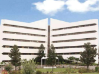
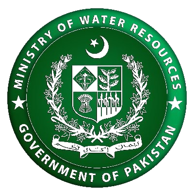
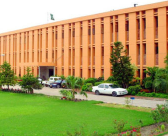
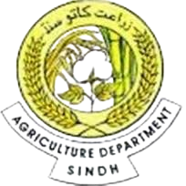
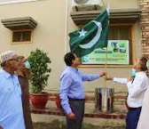
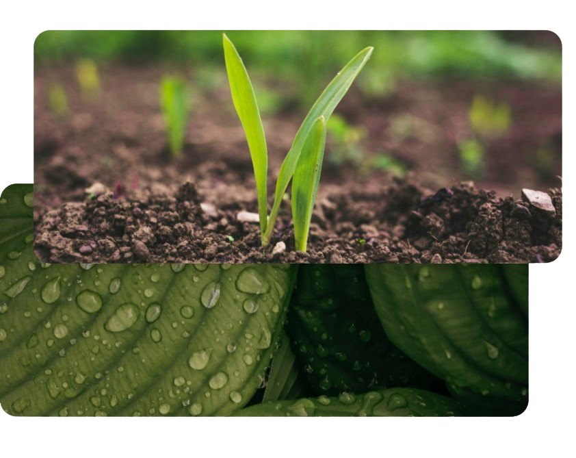

Partner
Collaborating with strong partners, we are committed to
driving sustainable solutions for a greener,
more prosperous Sindh
Government of Pakistan
The driving force behind national development, providing strategic guidance and policy support.
.png)
World Bank
A global financial institution offering financial and technical expertise for sustainable development.


Ministry of National Food Security and Research
Tedicated to ensuring food security and promoting agricultural research.
Ministry of Water Resources
Overseeing Pakistan s water resources management and development.


Sindh Agriculture Department
The lead agricultural agency in Sindh, responsible for promoting agricultural growth and development.

Sindh Agriculture Extension Service
Providing agricultural extension services to farmers at the grassroots level.
About Us
Nurturing Sindh's Future: A Water and Agriculture
Transformation

The project is in accordance with the strategic directions of food security in Pakistan Vision 2025. Pakistan is facing food and water security, in spite being agriculture-based economy. As food and water security are real concerns for governments worldwide, therefore, the nexus between food and water can further help in making water strategy for Sindh. Pakistan’s current water availability is comparatively less than other countries therefore making it “water stressed” and directing it towards “water scarce.”
Further this project is in line with the National Water Policy 2018; the object of water policy is to identify the emerging water crisis and provide an overall policy framework and guidelines for comprehensive policy action. The National Water Policy 2018 is a national framework within which the provinces will develop their master plans for sustainable development and management of water resources.
The formulation of Agriculture Policy was requirement of Sindh Government after 18th amendment of the constitution of Pakistan due to complete responsibility of agriculture are to be performed by the provincial governments.SWAT will help adjust the role of government in agriculture and water management and facilitate a transformation along the three dimensions ‘agriculture, water resources, and water service delivery.
SWAT PROJECT OBJECTIVES
OBJECTIVES
Enhance Agricultural Water Productivity
The primary objective of the project is to increase agricultural water productivity in the project areas, aiming to achieve more rupees per drop.
Promote Integrated Water Resources Management (IWRM)
The project seeks to establish a robust institutional framework for Integrated Water Resources Management (IWRM).
Facilitate Agricultural Policy Reforms
The project aims to support policy reforms in the agricultural sector, aligning with the objectives of the National Water Policy 2018
Key Features Of the SWAT
Policy and Legal Reforms
Institutional Support
Modernizing Canal Infrastructure
Community Centric Approach
Synergistic Investments
Boost Rural Economy
CIVIL WORKS UNDER COMPONENT 3
Civil works under component 3.1
Construction of water storage tanks: The project will facilitate participating farmers. The farmers having farms with sufficient water available to be stored would be provided financial support (40% cost share) for construction of storage tank to create a reliable water source for supplemental irrigation of crops.Lining of water courses: For lining, donor share will be 80% of total cost (which will cover all material costs) while farmers would bear 20% share in shape of kind i.e., labor, mason and excavation during execution.
Civil works under component 3.3
A building for “Centre of Excellence for Salinity & Reclamation Research” at Tandojam will be constructed. Glass house of Soil Salinity and Reclamation Research Institute Tandojam and all (06) district soil and water testing laboratories in project area will be renovated/ rehabilitated.New modern lab equipment, vehicles, farm implements, glass-wares and chemicals, will be purchased.Existing damaged laboratory equipment/ machinery will be repaired.Plastic/ earthen pots/ trays, plastic drums, plastic sheets, sprayers, seeds/ plants, genetic material etc. will be purchased
Water Resources Management
This subcomponent involves the formulation of a water resources law for Sindh province, the restructuring of the Irrigation Department into the Irrigation and Water Resources Department (IWRD), and comprehensive water pricing reforms.Sindh does not currently have a water resources law. The current water legislative framework consists of the Irrigation Act, 1879 (IA); the Sindh Water Management Ordinance 2002; and the Sindh Environmental Protection Act, 2014 (SEP Act). A new legal framework in the form of a water resources. act is required to create a unified framework for water resources management that recognizes both: (i) the multi-functional nature of the canal network, and (ii) the need for better management of water as a natural resource.Develop and implement a plan for restructuring and capacity building for the Department to fulfill its functions under the Sindh Water Policy and proposed new Water Law.
Water Service Delivery
The project aims to finance around 40 integrated FO area agricultural development subprojects in the 3 AWB areas where the previous project (WSIP) improved the main canal networks: Ghotki, Nara, and Left Bank AWBs. An average FO command area is around 5,800 ha (14,000 acres) and includes 24 WCAs which average around 250 ha (600 acres). In the Sindh administrative system, the Irrigation Department supports the AWB and the FO canal networks up to the WCA off-take point; the Agriculture Department supports the WCA canal network as well providing agricultural technical assistance.SWAT will address this issue by ensuring that investments under Component 2.1, which are managed by SIDA, and investments under Component 3.1 which are managed by the Agriculture Department, are co-located in the same FO command areas.